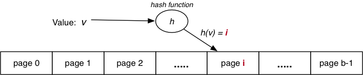

COMP9315 Week 04 Monday Lecture
COMP9315 24T1 ♢ Week 4 Monday Lecture ♢ [0/53]
- Quiz 2
- released 8am today ... due midnight Friday (March 8)
- Assignment 1
- valid names are defined by the BNF grammar
- "connection to the server was lost" ... your code crashed PostgreSQL
-
pg_size_pretty isn't looking for exact match ... just close
- Considering dropping this course?
- next Sunday is Census Day ... drop before then or you have to pay
COMP9315 24T1 ♢ Week 4 Monday Lecture ♢ [1/53]
❖ Implementing Select Efficiently | |
Two basic approaches:
- physical arrangement of tuples
- sorting
(search strategy)
- hashing
(static, dynamic, n-dimensional)
- additional indexing information
- index files
(primary, secondary, trees)
- signatures
(superimposed, disjoint)
Our analyses assume: 1 input buffer available for each relation.
If more buffers are available, most methods benefit.
COMP9315 24T1 ♢ Week 4 Monday Lecture ♢ [2/53]
Note: this is not "heap" as in the top-to-bottom ordered tree.
It means simply an unordered collection of tuples in a file.
COMP9315 24T1 ♢ Week 4 Monday Lecture ♢ [3/53]
For all selection queries, the only possible strategy is:
for each page P in file of relation R {
for each tuple t in page P {
if (t satisfies C)
add tuple t to result set
}
}
i.e. linear scan through file searching for matching tuples
COMP9315 24T1 ♢ Week 4 Monday Lecture ♢ [4/53]
❖ Selection in Heaps (cont) | |
The heap is scanned from the first to the last page:
Costrange = Costpmr = b
If we know that only one tuple matches the query (one query),
a simple optimisation is to stop the scan once that tuple is found.
Costone :
Best = 1
Average = b/2
Worst = b
COMP9315 24T1 ♢ Week 4 Monday Lecture ♢ [5/53]
Insertion: new tuple is appended to file (in last page).
rel = openRelation("R", READ|WRITE);
pid = nPages(rel)-1;
get_page(rel, pid, buf);
if (size(newTup) > size(buf))
{ deal with oversize tuple }
else {
if (!hasSpace(buf,newTup))
{ pid++; nPages(rel)++; clear(buf); }
insert_record(buf,newTup);
put_page(rel, pid, buf);
}
Costinsert = 1r + 1w
Plus possible extra writes for oversize tuples, e.g. PostgreSQL's TOAST
COMP9315 24T1 ♢ Week 4 Monday Lecture ♢ [6/53]
❖ Insertion in Heaps (cont) | |
Alternative strategy:
- find any page from
R with enough space
- preferably a page already loaded into memory buffer
PostgreSQL's strategy:
- use last updated page of
R in buffer pool
- otherwise, search buffer pool for page with enough space
- assisted by free space map (FSM) associated with each table
- for details:
backend/access/heap/{heapam.c,hio.c}
COMP9315 24T1 ♢ Week 4 Monday Lecture ♢ [7/53]
❖ Insertion in Heaps (cont) | |
PostgreSQL's tuple insertion:
heap_insert(Relation relation,
HeapTuple newtup,
CommandId cid, ...)
- finds page which has enough free space for
newtup
- ensures page loaded into buffer pool and locked
- copies tuple data into page buffer, sets
xmin, etc.
- marks buffer as dirty
- writes details of insertion into transaction log
- returns OID of new tuple if relation has OIDs
COMP9315 24T1 ♢ Week 4 Monday Lecture ♢ [8/53]
SQL: delete from R where Condition
Implementation of deletion:
rel = openRelation("R",READ|WRITE);
for (p = 0; p < nPages(rel); p++) {
get_page(rel, p, buf);
ndels = 0;
for (i = 0; i < nTuples(buf); i++) {
tup = get_record(buf,i);
if (tup satisfies Condition)
{ ndels++; delete_record(buf,i); }
}
if (ndels > 0) put_page(rel, p, buf);
if (ndels > 0 && unique) break;
}
COMP9315 24T1 ♢ Week 4 Monday Lecture ♢ [9/53]
❖ Exercise: Cost of Deletion in Heaps | |
Consider the following queries ...
delete from Employees where id = 12345
delete from Employees where dept = 'Marketing'
delete from Employees where 40 <= age and age < 50
Show how each will be executed and estimate the cost, assuming:
- b = 100, bq2 = 3, bq3 = 20
State any other assumptions.
Generalise the cost models for each query type.
COMP9315 24T1 ♢ Week 4 Monday Lecture ♢ [10/53]
PostgreSQL tuple deletion:
heap_delete(Relation relation,
ItemPointer tid, ...,
CommandId cid, ...)
- gets page containing tuple into buffer pool and locks it
- sets flags, commandID and
xmax in tuple; dirties buffer
- writes indication of deletion to transaction log
Vacuuming eventually compacts space in each page.
COMP9315 24T1 ♢ Week 4 Monday Lecture ♢ [11/53]
SQL: update R set F = val where Condition
Analysis for updates is similar to that for deletion
- scan all pages
- replace any updated tuples (within each page)
- write affected pages to disk
Costupdate = br + bqw
Complication: new tuple larger than old version (too big for page)
Solution: delete, re-organise free space, then insert
COMP9315 24T1 ♢ Week 4 Monday Lecture ♢ [12/53]
❖ Updates in Heaps (cont) | |
PostgreSQL tuple update:
heap_update(Relation relation,
ItemPointer otid,
HeapTuple newtup, ...,
CommandId cid, ...)
- essentially does
delete(otid), then insert(newtup)
- also, sets old tuple's
ctid field to reference new tuple
- can also update-in-place if no referencing transactions
COMP9315 24T1 ♢ Week 4 Monday Lecture ♢ [13/53]
PostgreSQL stores all table data in heap files (by default).
Typically there are also associated index files.
If a file is more useful in some other form:
- PostgreSQL may make a transformed copy during query execution
- programmer can set it via
create index...using hash
Heap file implementation:
src/backend/access/heap
COMP9315 24T1 ♢ Week 4 Monday Lecture ♢ [14/53]
❖ Heaps in PostgreSQL (cont) | |
PostgreSQL "heap file" may use multiple physical files
- files are named after the OID of the corresponding table
- first data file is called simply
OID
- if size exceeds 1GB, create a fork called
OID.1
- add more forks as data size grows (one fork for each 1GB)
- other files:
- free space map (
OID_fsm), visibility map (OID_vm)
- optionally, TOAST file (if table has varlen attributes)
- for details: Chapter 73 in PostgreSQL 15 documentation
COMP9315 24T1 ♢ Week 4 Monday Lecture ♢ [15/53]
COMP9315 24T1 ♢ Week 4 Monday Lecture ♢ [16/53]
Records stored in file in order of some field k
(the sort key).
Makes searching more efficient; makes insertion less efficient
E.g. assume c = 4
COMP9315 24T1 ♢ Week 4 Monday Lecture ♢ [17/53]
In order to mitigate insertion costs, use overflow blocks.
Total number of overflow blocks = bov.
Average overflow chain length = Ov = bov / b.
Bucket = data page + its overflow page(s)
COMP9315 24T1 ♢ Week 4 Monday Lecture ♢ [18/53]
❖ Selection in Sorted Files | |
For one queries on sort key, use binary search.
lo = 0; hi = b-1
while (lo <= hi) {
mid = (lo+hi) / 2;
(tup,loVal,hiVal) = searchBucket(f,mid,k,val);
if (tup != NULL) return tup;
else if (val < loVal) hi = mid - 1;
else if (val > hiVal) lo = mid + 1;
else return NOT_FOUND;
}
return NOT_FOUND;
where f is file for relation, mid,lo,hi are page indexes,
k is a field/attr, val,loVal,hiVal are values for k
COMP9315 24T1 ♢ Week 4 Monday Lecture ♢ [19/53]
❖ Selection in Sorted Files (cont) | |
Search a page and its overflow chain for a key value
searchBucket(f,pid,k,val)
{
buf = getPage(f,pid);
(tup,min,max) = searchPage(buf,k,val,+INF,-INF)
if (tup != NULL) return(tup,min,max);
ovf = openOvFile(f);
ovp = ovflow(buf);
while (tup == NULL && ovp != NO_PAGE) {
buf = getPage(ovf,ovp);
(tup,min,max) = searchPage(buf,k,val,min,max)
ovp = ovflow(buf);
}
return (tup,min,max);
}
Assumes each page contains index of next page in Ov chain
Note: getPage(f,pid) = { read_page(f,pid,buf); return buf; }
COMP9315 24T1 ♢ Week 4 Monday Lecture ♢ [20/53]
❖ Selection in Sorted Files (cont) | |
Search within a page for key; also find min/max key values
searchPage(buf,k,val,min,max)
{
res = NULL;
for (i = 0; i < nTuples(buf); i++) {
tup = getTuple(buf,i);
if (tup.k == val) res = tup;
if (tup.k < min) min = tup.k;
if (tup.k > max) max = tup.k;
}
return (res,min,max);
}
COMP9315 24T1 ♢ Week 4 Monday Lecture ♢ [21/53]
❖ Selection in Sorted Files (cont) | |
The above method treats each bucket like a single large page.
Cases:
- best: find tuple in first data page we read
- worst: full binary search, and not found
- examine log2b data pages
- plus examine all of their overflow pages
- average: examine some data pages + their overflow pages
Costone :
Best = 1
Worst = log2 b + bov
Average case cost analysis needs assumptions (e.g. data distribution)
COMP9315 24T1 ♢ Week 4 Monday Lecture ♢ [22/53]
❖ Exercise: Searching in Sorted File | |
Consider this sorted file with overflows (b=5, c=4):
Compute the cost for answering each of the following:
-
select * from R where k = 24
-
select * from R where k = 3
-
select * from R where k = 14
-
select max(k) from R
COMP9315 24T1 ♢ Week 4 Monday Lecture ♢ [23/53]
❖ Exercise: Optimising Sorted-file Search | |
The searchBucket(f,pid,k,val) function requires:
- read the pidth page from data file
- scan it to find a match and min/max k values in page
- while no match, repeat the above for each overflow page
- if we find a match in any page, return it
- otherwise, remember min/max over all pages in bucket
Suggest an optimisation that would improve
searchBucket()
performance for most buckets.
COMP9315 24T1 ♢ Week 4 Monday Lecture ♢ [24/53]
❖ Search with pmr and range Queries | |
For pmr query, on non-unique attribute k, where file is sorted on k
- tuples containing k may span several pages
E.g.
select * from R where k = 2
Begin by locating a page p containing k=val
(as for one query).
Scan backwards and forwards from p to find matches.
Thus, Costpmr = Costone + (bq-1).(1+Ov)
COMP9315 24T1 ♢ Week 4 Monday Lecture ♢ [25/53]
❖ Search with pmr and range Queries (cont) | |
For range queries on unique sort key (e.g. primary key):
- use binary search to find lower bound
- read sequentially until reach upper bound
E.g.
select * from R where k >= 5 and k <= 13
Costrange = Costone + (bq-1).(1+Ov)
COMP9315 24T1 ♢ Week 4 Monday Lecture ♢ [26/53]
❖ Search with pmr and range Queries (cont) | |
For range queries on non-unique sort key, similar method to pmr.
- binary search to find lower bound
- then go backwards to start of run
- then go forwards to last occurence of upper-bound
E.g.
select * from R where k >= 2 and k <= 6
Costrange = Costone + (bq-1).(1+Ov)
COMP9315 24T1 ♢ Week 4 Monday Lecture ♢ [27/53]
❖ Search with pmr and range Queries (cont) | |
So far, have assumed query condition involves sort key k.
But what about select * from R where j = 100.0 ?
If condition contains attribute j, not the sort key
- file is unlikely to be sorted by j as well
- sortedness gives no searching benefits
Costone,
Costrange,
Costpmr
as for heap files
COMP9315 24T1 ♢ Week 4 Monday Lecture ♢ [28/53]
❖ Insertion into Sorted Files | |
Insertion approach:
- find appropriate page for tuple (via binary search)
- if page not full, insert into page
- otherwise, insert into next overflow block with space
Thus,
Costinsert = Costone + δw
(where δw = 1 or 2)
Consider insertions of k=33, k=25, k=99 into:
COMP9315 24T1 ♢ Week 4 Monday Lecture ♢ [29/53]
❖ Deletion from Sorted Files | |
E.g. delete from R where k = 2
Deletion strategy:
- find matching tuple(s)
- mark them as deleted
Cost depends on
selectivity of selection condition
Recall: selectivity determines bq (# pages with matches)
Thus, Costdelete = Costselect + bqw
COMP9315 24T1 ♢ Week 4 Monday Lecture ♢ [30/53]
COMP9315 24T1 ♢ Week 4 Monday Lecture ♢ [31/53]
Basic idea: use key value to compute page address of tuple.

e.g. tuple with key = v is stored in page i
Requires: hash function h(v) that maps KeyDomain → [0..b-1].
- hashing converts key value (any type) into integer value
- integer value is then mapped to page index
- note: can view integer value as a bit-string
COMP9315 24T1 ♢ Week 4 Monday Lecture ♢ [32/53]
PostgreSQL hash function (simplified):
Datum hash_any(unsigned char *k, register int keylen)
{
register uint32 a, b, c, len;
len = keylen; a = b = c = 0x9e3779b9 + len + 3923095;
while (len >= 12) {
a += ka[0]; b += ka[1]; c += ka[2];
mix(a, b, c);
ka += 3; len -= 12;
}
mix(a, b, c);
return UInt32GetDatum(c);
}
See backend/access/hash/hashfunc.c for details (incl mix())
COMP9315 24T1 ♢ Week 4 Monday Lecture ♢ [33/53]
hash_any() gives hash value as 32-bit quantity (uint32).
Two ways to map raw hash value into a page address:
COMP9315 24T1 ♢ Week 4 Monday Lecture ♢ [34/53]
Aims:
- distribute tuples evenly amongst buckets
- have most buckets nearly full
(attempt to minimise wasted space)
Note: if data distribution not uniform,
address distribution can't be uniform.
Best case: every bucket contains same number of tuples.
Worst case: every tuple hashes to same bucket.
Average case: some buckets have more tuples than others.
Use overflow pages to handle "overfull" buckets (cf. sorted files)
All tuples in each bucket must have same hash value.
COMP9315 24T1 ♢ Week 4 Monday Lecture ♢ [35/53]
❖ Hashing Performance (cont) | |
Two important measures for hash files:
- load factor: L = r / bc
- average overflow chain length: Ov = bov / b
Three cases for distribution of tuples in a hashed file:
| Case |
L |
Ov |
| Best |
≅ 1 |
0 |
| Worst |
≫ 1 |
** |
| Average |
< 1 |
0<Ov<1 |
(** performance is same as Heap File)
To achieve average case, aim for 0.75 ≤ L ≤ 0.9.
COMP9315 24T1 ♢ Week 4 Monday Lecture ♢ [36/53]
Select via hashing on unique key k (one)
(pid,P) = getPageViaHash(val,R)
for each tuple t in page P {
if (t.k == val) return t
}
for each overflow page Q of P {
for each tuple t in page Q {
if (t.k == val) return t
} }
Costone : Best = 1, Avg = 1+Ov/2 Worst = 1+max(OvLen)
COMP9315 24T1 ♢ Week 4 Monday Lecture ♢ [37/53]
❖ Selection with Hashing (cont) | |
Select via hashing on non-unique hash key nk (pmr)
(pid,P) = getPageViaHash(val,R)
for each tuple t in page P {
if (t.nk == val) add t to results
}
for each overflow page Q of P {
for each tuple t in page Q {
if (t.nk == val) add t to results
} }
return results
Costpmr = 1 + Ov
COMP9315 24T1 ♢ Week 4 Monday Lecture ♢ [38/53]
❖ Selection with Hashing (cont) | |
Hashing does not help with range queries** ...
Costrange = b + bov
Selection on attribute j which is not hash key ...
Costone,
Costrange,
Costpmr
=
b + bov
** unless the hash function is order-preserving (and most aren't)
COMP9315 24T1 ♢ Week 4 Monday Lecture ♢ [39/53]
Insertion uses similar process to one queries.
(pid,P) = getPageViaHash(val,R)
if room in page P {
insert t into P; return
}
for each overflow page Q of P {
if room in page Q {
insert t into Q; return
} }
add new overflow page Q
link Q to previous page
insert t into Q
Costinsert :
Best: 1r + 1w
Worst: 1+max(OvLen))r + 2w
COMP9315 24T1 ♢ Week 4 Monday Lecture ♢ [40/53]
❖ Exercise: Insertion into Static Hashed File | |
Consider a file with b=4, c=3, d=2, h(x) = bits(d,hash(x))
Insert tuples in alpha order with the following keys and hashes:
| k | hash(k) |
|
k | hash(k) |
|
k | hash(k) |
|
k | hash(k) |
a | 10001 |
|
g | 00000 |
|
m | 11001 |
|
s | 01110 |
b | 11010 |
|
h | 00000 |
|
n | 01000 |
|
t | 10011 |
c | 01111 |
|
i | 10010 |
|
o | 00110 |
|
u | 00010 |
d | 01111 |
|
j | 10110 |
|
p | 11101 |
|
v | 11111 |
e | 01100 |
|
k | 00101 |
|
q | 00010 |
|
w | 10000 |
f | 00010 |
|
l | 00101 |
|
r | 00000 |
|
x | 00111 |
The hash values are the 5 lower-order bits from the full 32-bit hash.
COMP9315 24T1 ♢ Week 4 Monday Lecture ♢ [41/53]
Similar performance to select on non-unique key:
(pid,P) = getPageViaHash(val,R)
ndel = delTuples(P,k,val)
if (ndel > 0) putPage(f,P,pid)
for each overflow page qid,Q of P {
ndel = delTuples(Q,k,val)
if (ndel > 0) putPage(ovf,Q,qid)
}
Extra cost over select is cost of writing back modified blocks.
Method works for both unique and non-unique hash keys.
COMP9315 24T1 ♢ Week 4 Monday Lecture ♢ [42/53]
❖ Problem with Hashing... | |
So far, discussion of hashing has assumed a fixed file size
(b).
What size file to use?
- the size we need right now
(performance degrades as file overflows)
- the maximum size we might ever need
(signifcant waste of space)
Change file size ⇒ change hash function ⇒ rebuild file
Methods for hashing with dynamic files:
- extendible hashing, dynamic hashing (need a directory, no overflows)
- linear hashing (expands file "sytematically", no directory, has overflows)
COMP9315 24T1 ♢ Week 4 Monday Lecture ♢ [43/53]
❖ Problem with Hashing... (cont) | |
All flexible hashing methods ...
- treat hash as 32-bit bit-string
- adjust hashing by using more/less bits
Start with hash function to convert value to bit-string:
uint32 hash(unsigned char *val)
Require a function to extract d bits from bit-string:
unit32 bits(int d, uint32 val)
Use result of bits() as page address.
COMP9315 24T1 ♢ Week 4 Monday Lecture ♢ [44/53]
❖ Exercise: Bit Manipulation | |
-
Write a function to display
uint32 values as 01010110...
char *showBits(uint32 val, char *buf);
Analogous to gets() (assumes supplied buffer large enough)
-
Write a function to extract the d bits of a
uint32
uint32 bits(int d, uint32 val);
If d > 0, gives low-order bits; if d < 0, gives high-order bits
COMP9315 24T1 ♢ Week 4 Monday Lecture ♢ [45/53]
Important concept for flexible hashing: splitting
- consider one page (all tuples have same hash value)
- recompute page numbers by considering one extra bit
- if current page is
101, new pages have hashes 0101 and 1101
- some tuples stay in page
0101 (was 101)
- some tuples move to page
1101 (new page)
- also, rehash any tuples in overflow pages of page
101
Result: expandable data file, never requiring a complete file rebuild
COMP9315 24T1 ♢ Week 4 Monday Lecture ♢ [46/53]
Example of splitting:
Tuples only show key value; assume h(val) = val
COMP9315 24T1 ♢ Week 4 Monday Lecture ♢ [47/53]
File organisation:
- file of primary data blocks
- file of overflow data blocks
- a "register" called the split pointer (sp)
Uses systematic method of growing data file ...
- hash function "adapts" to changing address range
- systematic splitting controls length of overflow chains
Advantage: does
not require auxiliary storage for a directory
Disadvantage: requires overflow pages (don't split on full pages)
COMP9315 24T1 ♢ Week 4 Monday Lecture ♢ [48/53]
File grows linearly (one block at a time, at regular intervals).
Has "phases" of expansion; over each phase, b doubles.
COMP9315 24T1 ♢ Week 4 Monday Lecture ♢ [49/53]
❖ Selection with Lin.Hashing | |
If b=2d, the file behaves exactly like standard hashing.
Use d bits of hash to compute block address.
h = hash(val);
pid = bits(d,h);
P = getPage(f, pid)
for each tuple t in page P
and its overflow pages {
if (t.k == val) add t to Result;
}
Average Costone = 1+Ov
COMP9315 24T1 ♢ Week 4 Monday Lecture ♢ [50/53]
❖ Selection with Lin.Hashing (cont) | |
If b != 2d, treat different parts of the file differently.
Parts A and C are treated as if part of a
file of size 2d+1.
Part B is treated as if part of a file of size 2d.
Part D does not yet exist (tuples in B may eventually move into it).
COMP9315 24T1 ♢ Week 4 Monday Lecture ♢ [51/53]
❖ Selection with Lin.Hashing (cont) | |
Modified search algorithm:
h = hash(val);
pid = bits(d,h);
if (pid < sp) { pid = bits(d+1,h); }
P = getPage(f, pid)
for each tuple t in page P
and its overflow blocks {
if (t.k == val) add t to Result;
}
COMP9315 24T1 ♢ Week 4 Monday Lecture ♢ [52/53]
❖ File Expansion with Lin.Hashing | |
COMP9315 24T1 ♢ Week 4 Monday Lecture ♢ [53/53]
Produced: 4 Mar 2024
![[Diagram:Pics/file-struct/heapscan.png]](./lec07_files/heapscan.png)
![[Diagram:Pics/file-struct/sorted-file1.png]](./lec07_files/sorted-file1.png)
![[Diagram:Pics/file-struct/linhash2.png]](./lec07_files/linhash2.png)